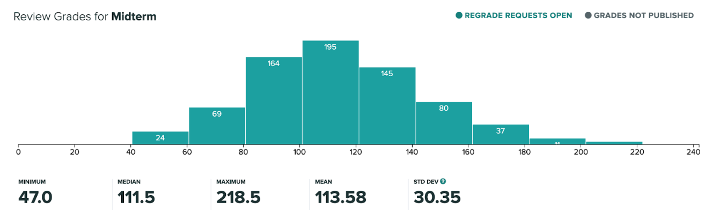

Exercise II
'Horrifyingly absurd': how did millennial comedy get so surreal?
This article discusses the rise of surreal and dark humor among millennials, attributing it to the chaotic and ever-changing nature of the world and the internet. It cites many examples of this type of humor from various TV shows, movies, and comedians. I feel that this will be very useful in my project since it explores some of the shows that I was interested in analyzing, and also where the internet blends with other media which previously existed.
How ‘Channel 5’ Is Changing Journalism, One YouTube Post at a Time
This article discusses Andrew Callaghan, the host of Channel 5. Born on the internet (Youtube), the channel serves both comedy and serious journalism. The crew of the channel have adopted a “chaos compilation” style of editing with a focus on genuity and absurdity. This article is useful to my discussion as it offers a case study of what type of information outlets arise from the internet.
In the Land of Internet Subcultures, Try Not to Look Like a Tourist
This article explores a right-wing subculture of Youtube and how subcultures similar to this interact. It discusses the different social media platforms that people use to engage in these subcultures and also the historical context of such subcultures. I feel that this article can help me get a general idea of what subcultures exist on the internet and the internet’s impact on their growths or formations.
New Key Words: Absuridty, what new outlets have arised from the Internet, and how have those outlets influenced the modern cultural landscape?
Exercise III
Technologising pedagogy: The internet, nihilism and phenomenology of learning
This Journal talks about how the internet has transformed how information is dealt with in society. Essentially, it gives access to information at a massive scale, which can be used as a means for mass education. However, it also poses complex issues revolving around such new information being readily available and easily publishable. This relates directly to my theme of how the internet has changed the way we consume information and the problems that come with it.
Citation: Peters, Michael Adrian. “Technologising pedagogy: The internet, nihilism and phenomenology of learning.” Simile: Studies in Media & Information Literacy Education 3 (2003): 1-10.
Why Nietzsche wouldn't go near social media
This article defines nihilism and how it fits in the context historically and presently. It introduces the concepts of passive nihilism (where one accepts defeat and settles for the status quo) and active nihilism (where one actively questions the normative standards and destructs them productively to align with their individualism). In the past, religion and consumerism have been the main driver for passive nihilism, but now, technology is becoming the new driver. This article helps define nihilism and it shows how the internet might fit into the current world. It shows how the internet might be contributing to misinformation and how the internet interacts with social norms.
On The Internet (Book by Dreyfus, Hubert L.)
This book covers many topics related to the internet and its potential influences on society. One particular section of the book is titled “nihilism on the information highway : anonymity vs. commitment in the present age.” I feel that this book can help me find more information on how anonymity might influence how people act on the internet, and how this affects the information available on the internet (and thus how people interact with this information).
New Key Words: Internet and subcultures, internet and nihilism, misinformation, absurdity.
Library Exercise IV
Library Exercise V
- Girod, M., Rau, C., & Schepige, A. (2003). Appreciating the beauty of science ideas: Teaching for aesthetic understanding. Science Education, 87(4), 574–587. https://doi.org/10.1002/sce.1054
- Romanowski, M. H. (2012). Student obsession with grades and achievement. Kappa Delta Pi Record, 40(4), 149–151. https://doi.org/10.1080/00228958.2004.10516425
- Thompson, D. (2019, December 17). The real trouble with Silicon Valley. The Atlantic. Retrieved October 14, 2022, from https://www.theatlantic.com/magazine/archive/2020/01/wheres-my-flying-car/603025/
Library Exercise VI
| ⠀ | ⠀ |
|  |
|
| ⠀ | ⠀ |
|
|
| ⠀ | ⠀ |
|